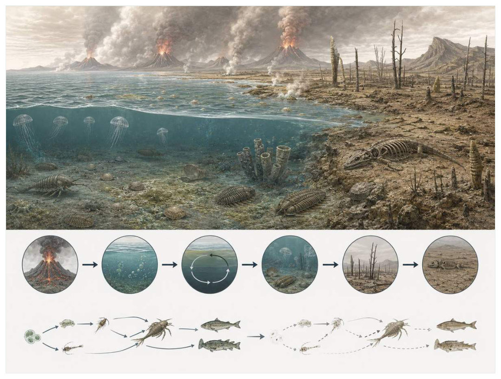
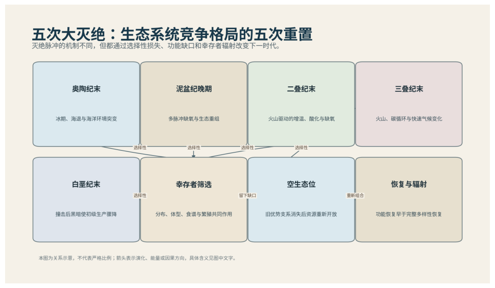

第10篇 · 二叠纪大灭绝：生命史最大危机 · 第 33 章
二叠纪末大灭绝：火山、升温、缺氧与酸化的级联
本篇主题:二叠纪大灭绝：生命史最大危机
火山活动、升温、缺氧和生态网络崩溃把复杂世界压到最低点。

本章科学复原配图 （用于呈现结构与生态关系, 不替代化石照片、测量数据与系统发育证据。）
生命史推进到约2.519亿年前，主要脉冲可能持续数万至数十万年时，旧支系仍在延续，新结构也开始改变竞争规则。西伯利亚大火成岩省在接近二叠纪末边界时释放巨量岩浆和挥发物。岩浆侵入富碳沉积物可进一步产生二氧化碳、甲烷和有毒卤素，驱动快速全球升温。暖水溶氧下降，海洋分层增强；陆地风化和营养输入又促进生产后缺氧，海水酸化打击碳酸盐骨骼生物。多个过程形成正反馈，使生理耐受和食物网同时越过阈值。
进入这个时代
若真正置身其中，首先感受到的是介质本身：水是否含氧、地面是否稳定、空气是否干燥、植被是否遮挡视线。身体结构只有放在这些条件中才有意义。灾难并不是一个瞬间火球，而是越来越难以恢复的环境。海洋表层变暖，深水缺氧甚至富硫化氢，碳酸盐饱和度下降；陆地极端降雨、干旱和火灾交替，植被覆盖破碎，土壤被侵蚀进河流。个体可能躲过一次热浪，却难以在多年繁殖失败和食物减少中维持种群。
在“二叠纪末大灭绝：火山、升温、缺氧与酸化的级联”所覆盖的时间里，不能把地理与气候当作固定背景。海陆位置、海平面、河流或植被结构会改变资源可达性，同一性状在不同地区可能得到完全相反的选择结果。
以二叠纪末大灭绝：火山、升温、缺氧与酸化的级联为例，环境变化首先作用于生理边界。温度改变酶反应和耗氧量，氧气决定持续活动余量，酸碱度影响骨骼和外壳材料，水分则限制气体交换与胚胎发育。只有跨过这些底层约束，捕食和竞争才有机会决定谁占优势。 在本章中，这一约束具体落在“高温直接压缩动物有氧活动余量”这条关系上。
再从约2.519亿年前，主要脉冲可能持续数万至数十万年的时间尺度看，身体结构总有材料和发育成本。硬壳提高防护却使生长和运动更昂贵，长颈扩大取食范围却增加支撑与供血问题，高代谢提高持续活动也提高食物需求。所谓成功设计从来是特定环境中的权衡。 它与“火成岩省驱动的快速碳释放”共同决定了后续变化可以沿哪些路径发生。

图 33-1 五次大灭绝重置竞争格局，而非只减少物种数。
生态系统如何运转
“高温直接压缩动物有氧活动余量”体现了生态系统的反馈性。一方结构或行为稍有改变，另一方的防御、逃避、繁殖和空间选择就会重新排列，长期累积后才形成宏观演化差异。
围绕“高温直接压缩动物有氧活动余量”，从演化树看，相似关系可能在远亲中反复出现。功能相近不必意味着近缘，而同一祖先结构也可能被后代改作完全不同的用途；生态解释必须与系统发育互相校验。 对二叠纪末大灭绝：火山、升温、缺氧与酸化的级联而言，这一后果还会与“缺氧和硫化扩张切断底栖食物网”相互放大或抵消。
在约2.519亿年前，主要脉冲可能持续数万至数十万年，“缺氧和硫化扩张切断底栖食物网”把环境条件转化为生物之间的差异。相同气候并不会平均影响所有支系，因为它们利用的食物、水层、底质和繁殖地点并不相同。
围绕“缺氧和硫化扩张切断底栖食物网”，当环境快速越过生理阈值时，原有互动甚至来不及通过适应重新平衡。此时灭绝的选择性会更多取决于分布、食物来源和繁殖速度，而不是平时竞争中的相对强弱。 对二叠纪末大灭绝：火山、升温、缺氧与酸化的级联而言，这一后果还会与“陆地植被损失、土壤侵蚀和水体富营养化相互强化”相互放大或抵消。
本章的一条关键关系是“陆地植被损失、土壤侵蚀和水体富营养化相互强化”。它首先改变资源在个体之间的分配：能更早发现、处理或占据资源的种群获得收益，而另一方会承受新的选择压力。
围绕“陆地植被损失、土壤侵蚀和水体富营养化相互强化”，这种关系没有永恒赢家。收益随密度和环境改变：防御越常见，攻击专门化的价值越高；资源越稀少，维持昂贵结构的代价越大。化石记录中的扩张与衰退，常是这种动态平衡被外部事件打破的结果。 对二叠纪末大灭绝：火山、升温、缺氧与酸化的级联而言，这一后果还会与“高温直接压缩动物有氧活动余量”相互放大或抵消。
关键演化创新
在“二叠纪末大灭绝：火山、升温、缺氧与酸化的级联”中，围绕“火成岩省驱动的快速碳释放”，“火成岩省驱动的快速碳释放”没有把生物推向更高级层级，而是重新划分可利用资源。它让某些水层、食物尺寸、活动时间或繁殖地点变得可行，同时也带来能量、材料和发育控制成本。 它首先需要在约2.519亿年前，主要脉冲可能持续数万至数十万年的生态条件下产生可测量收益。
就“火成岩省驱动的快速碳释放”而言，研究者通过近缘支系比较、发育同源、关节活动、微观组织和出现顺序重建这条路径。真正有价值的过渡化石不是“半成品”，而是证明中间组合可以独立生活。 本章把它与“海洋生理性缺氧”并列，是为了显示复杂性状往往依赖多部分协同。
在“二叠纪末大灭绝：火山、升温、缺氧与酸化的级联”中，围绕“海洋生理性缺氧”，“海洋生理性缺氧”一旦出现，还会改变其他物种的环境。新的捕食方式、取食高度或繁殖场所会制造选择压力，促使整个群落而不只是发明者发生响应。 它首先需要在约2.519亿年前，主要脉冲可能持续数万至数十万年的生态条件下产生可测量收益。
就“海洋生理性缺氧”而言，它的成功具有条件性。环境稳定时，专门化可提高效率；危机到来时，同一专门化可能限制食物和栖息地选择。演化创新因此既能开启辐射，也能制造新的脆弱性。 本章把它与“跨陆海的生态反馈”并列，是为了显示复杂性状往往依赖多部分协同。
在“二叠纪末大灭绝：火山、升温、缺氧与酸化的级联”中，围绕“跨陆海的生态反馈”，“跨陆海的生态反馈”没有把生物推向更高级层级，而是重新划分可利用资源。它让某些水层、食物尺寸、活动时间或繁殖地点变得可行，同时也带来能量、材料和发育控制成本。 它首先需要在约2.519亿年前，主要脉冲可能持续数万至数十万年的生态条件下产生可测量收益。
就“跨陆海的生态反馈”而言，这一变化还可能在多个支系中独立发生。若功能相似而解剖来源不同，就是趋同；若结构来自共同祖先但功能改变，则属于同源结构的分化。二者不能仅靠外观判断。 本章把它与“火成岩省驱动的快速碳释放”并列，是为了显示复杂性状往往依赖多部分协同。
生命群像：把物种放回生态网络
微小腹足类灾难群（microgastropod disaster taxa）
微小腹足类灾难群（microgastropod disaster taxa）生活在二叠纪末至早三叠世，已知体型约为毫米级。它在群落中的角色可概括为受扰动浅海中的机会型底栖者。最值得观察的结构是小体型和快速繁殖使其在低复杂度群落中大量出现。这些结构不是为了后来时代而准备，而是在当时直接影响摄食、运动、防御或繁殖。
对微小腹足类灾难群而言，把它放回群落后，结构的意义更清楚。食物并不会平均分布，水深、植被高度、底质和季节把资源切成小块；它的身体让其中一部分资源可被利用，也使它与近缘种错开生态位。种群命运还取决于幼体能否成长、繁殖地点是否稳定以及灾害后是否仍有避难所。 这使“小体型和快速繁殖使其在低复杂度群落中大量出现”不能脱离其受扰动浅海中的机会型底栖者角色来理解。
关于它的直接依据是：高丰度不代表整个生态恢复，只说明少数耐受类群占据空缺。研究者还必须确认骨骼是否属于同一个体、是否被水流搬运、压扁是否改变比例，以及不同大小是否只是成长阶段。只有解剖、地层和功能证据相互一致，复原才可上调为高可信。
由微小腹足类灾难群这个案例看，它在生命史中的价值不在于离现代形态还有多远，而在于证明这一身体组合曾真实可行。即使没有直系后代，支系也可能在当时持续繁盛，并通过捕食、植食或栖息地工程改变其他生命的选择环境。 它在二叠纪末至早三叠世留下的记录，因此同时是第33章所讨论的形态史和生态史的一部分。
克拉拉双壳（Claraia）
在这一章的生命群像里，克拉拉双壳（Claraia）不能只当作图鉴名称。它出现于早三叠世，体型大约厘米级，主要生活方式是低氧环境中广布的机会型双壳类；薄壳、广泛分布和高密度使其成为危机后标志则说明身体怎样围绕这一生活方式进行组合。
对克拉拉双壳而言，同域物种的存在迫使它分割时间与空间。相似牙齿不一定吃完全相同的食物，相似四肢也可能适应不同底质；微磨损、同位素和伴生群落常能揭示这种细分。环境改变时，原本减少竞争的专门化又可能成为迁移和改食的障碍。这使“薄壳、广泛分布和高密度使其成为危机后标志”不能脱离其低氧环境中广布的机会型双壳类角色来理解。
现有认识建立在耐缺氧机制主要由生态分布和壳体推断，不能简单称为唯一幸存者之上。古生物学的可信度不是来自一件戏剧化标本，而是来自多件标本、多个地点和不同方法得到相容结果。新发现若改变比例或分类，并非此前研究毫无价值，而是证据边界被重新画清。
由克拉拉双壳这个案例看，从生态尺度看，它与本章其他成员共同维持一张网络。任何“最强”排名都会遗漏资源供应、幼体死亡、疾病和气候脉冲；真正决定长期成功的是种群能否在波动中不断完成繁殖。 它在早三叠世留下的记录，因此同时是第33章所讨论的形态史和生态史的一部分。
微生物岩群落（Early Triassic microbialites）
从外形看，微生物岩群落（Early Triassic microbialites）最容易被记住的是灭绝后多地重新扩张，反映掘穴和取食压力下降。它生活在二叠纪末至早三叠世，大小约层状至丘状米级构造，承担缺少动物扰动海床上的微生物工程群落这一生态功能。把年代、体型和功能放在一起，才能避免把奇特形态当成无意义装饰。
对微生物岩群落而言，它的成功不需要在所有性能上压倒其他物种，只需在特定资源和风险组合中留下更多后代。速度、咬合、装甲、感官与繁殖之间存在预算，某项性能极端化往往意味着另一项被牺牲。所谓“霸主”只是复杂权衡后的区域性结果。这使“灭绝后多地重新扩张，反映掘穴和取食压力下降”不能脱离其缺少动物扰动海床上的微生物工程群落角色来理解。
支持该解释的材料包括形成也受海水化学控制，不是动物灭绝的单一结果。若不同证据出现冲突，应优先报告范围而不是强行给出单值。例如体长会随参照类群变化，运动能力会随软组织假设变化，系统位置也会随新增性状重新计算。
由微生物岩群落这个案例看，它也展示专门化的双面性：结构在稳定环境中提高效率，却可能在气候、食物或竞争格局突变时限制转向。灭绝不是对设计的道德评分，而是性状、地理范围和偶然事件相遇后的历史结果。 它在二叠纪末至早三叠世留下的记录，因此同时是第33章所讨论的形态史和生态史的一部分。
牙形石（Conodonta）
牙形石（Conodonta）是寒武纪至三叠纪末的一名真实生态成员，而不是通往后代的抽象过渡。它约有个体厘米级，牙元素毫米级，以小型游泳脊椎动物的方式获取资源；磷灰质牙元素的氧同位素精确记录海温变化反映了其祖先历史与局部选择压力共同留下的结果。
对牙形石而言，从种群角度看，偶发捕猎和个体伤病远不如长期繁殖率重要。广泛分布的普通个体比一具异常巨大的标本更能代表支系，然而普通个体往往较少进入公众叙事。研究者必须防止把化石收藏偏好误当成古代丰度。 这使“磷灰质牙元素的氧同位素精确记录海温变化”不能脱离其小型游泳脊椎动物角色来理解。
我们之所以能够作出上述判断，主要因为软体仅少数化石保存，生态范围多样，温度重建需校正成岩作用。单一结构通常有多种功能解释，所以还要查看磨损、病理、肌肉附着、沉积环境和近缘比较。计算模型能排除不可能姿势，却不能自动恢复没有保存的软组织。
由牙形石这个案例看，面对仍有争议的细节，负责任的复原不是停止讲述，而是标注证据等级。形态、年代和亲缘可较确定，具体姿势、叫声、求偶和群猎则按材料降级；新标本会在这些边界内继续改写认识。它在寒武纪至三叠纪末留下的记录，因此同时是第33章所讨论的形态史和生态史的一部分。
格陵兰鲨类幸存者（Hybodontiformes）
若把镜头从时代拉近到个体，格陵兰鲨类幸存者（Hybodontiformes）会首先进入视野。它生活于泥盆纪至白垩纪，体型约从几十厘米到数米。作为海洋和淡水捕食者，它依靠异型牙和鳍棘帮助部分支系跨过危机与环境和其他生物发生关系。
对格陵兰鲨类幸存者而言，把它放回群落后，结构的意义更清楚。食物并不会平均分布，水深、植被高度、底质和季节把资源切成小块；它的身体让其中一部分资源可被利用，也使它与近缘种错开生态位。种群命运还取决于幼体能否成长、繁殖地点是否稳定以及灾害后是否仍有避难所。 这使“异型牙和鳍棘帮助部分支系跨过危机”不能脱离其海洋和淡水捕食者角色来理解。
其复原依赖幸存原因可能包括广生态幅和淡水避难，但不同种不能一概而论。年代和保存形态通常属于较强证据，体重、速度、颜色和社会行为则需要额外假设。书中把这些层次拆开，是为了让读者知道哪些可视为事实，哪些仍应等待更多材料。
由格陵兰鲨类幸存者这个案例看，它不是祖先链条上必须跨过的一格。演化树中同时存在许多近缘支系，只有少数留下后代；旁支化石同样关键，因为它们显示某组性状出现的顺序和可行范围。 它在泥盆纪至白垩纪留下的记录，因此同时是第33章所讨论的形态史和生态史的一部分。
因果链：环境、生态与性状
“高温直接压缩动物有氧活动余量”与“陆地植被损失、土壤侵蚀和水体富营养化相互强化”之间常存在反馈。一个支系改变沉积、植被或猎物数量后，环境会对其自身和其他支系产生新的选择压力；短期收益可能导致长期资源下降，局部工程行为也可能创造此前不存在的栖息地。微小腹足类灾难群作为受扰动浅海中的机会型底栖者，微生物岩群落作为缺少动物扰动海床上的微生物工程群落，即使从不直接相遇，也可能经由这种环境改造联系起来。生态系统因此不是静态背景上的竞赛场，而是参与者不断修改规则的动态结构；这正是解释二叠纪末大灭绝：火山、升温、缺氧与酸化的级联为何会留下长期后果的关键。
亲缘关系为功能解释设定边界。“跨陆海的生态反馈”若在近缘支系中以不同程度出现，最简解释通常是祖先已具备部分结构，后代分别强化或丢失；若远亲在相似生态位中出现相近功能，则需要检查内部解剖是否来自不同材料。微小腹足类灾难群与微生物岩群落可用于演示这一区分：外形近似不自动证明近缘，外形差异也不否定深层同源。把系统发育树、年代和生态证据叠在一起，才能判断二叠纪末大灭绝：火山、升温、缺氧与酸化的级联中的相似究竟来自共同继承、趋同还是保留的原始特征。
从资源入口看，“高温直接压缩动物有氧活动余量”决定能量首先由谁获得，而“缺氧和硫化扩张切断底栖食物网”决定能量随后怎样在群落中转移。只有当个体能够借助“火成岩省驱动的快速碳释放”把资源转化为生长或后代时，形态优势才会成为种群优势。微小腹足类灾难群与克拉拉双壳分别展示了这条链上的不同位置：前者的小体型和快速繁殖使其在低复杂度群落中大量出现使其偏向受扰动浅海中的机会型底栖者，后者的薄壳、广泛分布和高密度使其成为危机后标志则服务于低氧环境中广布的机会型双壳类。这并不意味着二者必然直接竞争；更常见的情况是，它们通过共享资源、改变栖息地或影响共同捕食者而间接连接。把这种间接作用纳入，才看得见二叠纪末大灭绝：火山、升温、缺氧与酸化的级联不是物种名单，而是一张持续重新分配能量的网络。
“陆地植被损失、土壤侵蚀和水体富营养化相互强化”说明环境不是在所有个体身上平均施力。若一个种群分布广、世代较短或能使用多种资源，它可能把一次局部危机吸收到地理和生活史差异之中；若另一个种群依赖狭窄水深、单一植物或特定繁殖场，平时高效的专门化就可能在变化中放大风险。克拉拉双壳和微生物岩群落的差异可以用来提出这种比较，但不能仅凭外形宣布谁更适应。真正需要的是地层连续性、地区分布、年龄结构和伴生群落共同告诉我们，哪些性状在二叠纪末大灭绝：火山、升温、缺氧与酸化的级联的具体条件下转化成了更稳定的繁殖。
如果把二叠纪末大灭绝：火山、升温、缺氧与酸化的级联当作一次自然实验，可以追问：假如“高温直接压缩动物有氧活动余量”较弱，“海洋生理性缺氧”是否仍会带来同样收益；假如“缺氧和硫化扩张切断底栖食物网”更强，微小腹足类灾难群的小体型和快速繁殖使其在低复杂度群落中大量出现是否反而成为负担。反事实无法直接验证，却能帮助研究者识别模型隐含的因果假设。随后再用高精度铀铅定年对齐火山脉冲与灭绝层和汞异常、镍同位素和碳同位素追踪火山与碳循环寻找可区分的预测：不同机制应在体型分布、损伤类型、沉积环境或出现顺序上留下不同痕迹。科学解释不是为现有图景编一个顺耳故事，而是让相互竞争的解释接受同一批材料检验。
时代横截面：个体、种群与证据
把微小腹足类灾难群与克拉拉双壳并排观察，可以看到同一时代并不存在唯一正确的身体方案。微小腹足类灾难群以小体型和快速繁殖使其在低复杂度群落中大量出现参与受扰动浅海中的机会型底栖者，克拉拉双壳则依靠薄壳、广泛分布和高密度使其成为危机后标志承担低氧环境中广布的机会型双壳类；两者可能在食物尺寸、活动空间或时间上错开，从而降低直接竞争。若环境改变使这些维度重新重叠，原先共存的支系才可能发生更强替代。比较的目的不是判断谁更先进，而是识别每套结构在哪些条件下有效、在哪些条件下暴露成本。
尺度转换是二叠纪末大灭绝：火山、升温、缺氧与酸化的级联最容易被忽略的问题。微小腹足类灾难群的一次摄食、一次移动或一次繁殖属于分钟到季节尺度；种群扩张需要数百至数万年；“火成岩省驱动的快速碳释放”在演化树上的固定则可能跨越更久。短期观察能够说明结构怎样工作，却不能单独解释支系为何在约2.519亿年前，主要脉冲可能持续数万至数十万年扩张。反之，宏观多样性曲线能显示替换，却不能指出每次选择发生在什么身体和生活阶段。把尺度接起来，因果链才完整。
从失败的替代解释出发，能够看见研究如何推进。若把微小腹足类灾难群简单解释为受扰动浅海中的机会型底栖者，就应检查其小体型和快速繁殖使其在低复杂度群落中大量出现是否真的适合该功能；若另一种功能同样可行，再看磨损、同位素、沉积环境或共存生物能否区分。克拉拉双壳与微生物岩群落提供了比较基线，帮助判断某一结构是普遍祖征、特殊适应还是成长阶段差异。结论不是从外观直觉跳出，而是在一系列被排除的可能性之后留下。
本章还可以作为灭绝选择性的预演。若危机首先削弱“高温直接压缩动物有氧活动余量”，依赖该环节的微小腹足类灾难群可能比外形更脆弱但食物广泛的克拉拉双壳更早衰退；若危机破坏的是繁殖场或幼体环境，成年体型和武器几乎不能提供保护。分布范围、成熟速度、休眠能力与食谱因此要和小体型和快速繁殖使其在低复杂度群落中大量出现、薄壳、广泛分布和高密度使其成为危机后标志等显眼结构一起评估。危机筛选的是整套生活史，而不是单项竞技能力。
从保存角度看，微小腹足类灾难群和克拉拉双壳也可能被化石记录不公平地对待。微小腹足类灾难群的小体型和快速繁殖使其在低复杂度群落中大量出现若包含坚硬、容易辨认的部分，就更可能被采集和命名；克拉拉双壳若身体柔软、个体小或生活在侵蚀环境，真实丰度可能被严重低估。高精度铀铅定年对齐火山脉冲与灭绝层能补充一部分信息，汞异常、镍同位素和碳同位素追踪火山与碳循环又提供另一尺度的限制。只有先问“什么容易被保存”，再问“什么当时常见”，才不会把博物馆展柜的比例误当成古生态比例。
科学家为什么这样判断
使用“高精度铀铅定年对齐火山脉冲与灭绝层”时必须处理保存偏差。坚硬组织、低氧埋藏和火山灰覆盖更容易留下记录，岩层出露与采集历史又决定样本数量。统计分析通常要校正这些不均匀性，避免把采样强度当作真实多样性。
围绕“汞异常、镍同位素和碳同位素追踪火山与碳循环”，高可信结论通常来自独立方法一致。例如形态暗示某种食性时，微磨损、同位素或胃内容物若给出相同方向，解释便更稳固；若结果冲突，就应保留生态弹性或地区差异。
证据条目“硼同位素、铀同位素和黄铁矿指标约束酸化与缺氧”的作用，是把肉眼可见的化石转化为可检验结论。研究者先确认样品的层位和成岩历史，再测量结构、比较近缘种并建立替代模型；若解释只在一套参数下成立，就不能写成唯一事实。
在“二叠纪末大灭绝：火山、升温、缺氧与酸化的级联”这一问题上，把上述方法合在一起，研究者才能从残缺材料走向受约束的复原。任何一条证据都可能受到成岩、污染、样本量或现代类比的限制；结论越具体，越需要多条独立证据指向同一方向，并与约2.519亿年前，主要脉冲可能持续数万至数十万年的地层背景相容。
过去的图景与今天的证据
西伯利亚火山活动是主流触发机制，但不同挥发物来源、释放速率和杀伤路径权重仍在研究。臭氧层破坏、金属毒性、野火和海洋硫化可能是区域或阶段性因素。可靠模型必须同时解释灭绝的时间、选择性、全球范围和漫长恢复，而不能只展示单一灾害。
围绕“二叠纪末大灭绝：火山、升温、缺氧与酸化的级联”，数据存在范围时，本书使用约数而非虚假精确值。体型会因缺失骨骼和软组织密度变化，年代会因定年误差调整，灭绝比例会因分类和采样校正改变；一个区间往往比醒目的单值更科学。
对约2.519亿年前，主要脉冲可能持续数万至数十万年的材料而言，当多种机制可以并存时，不应为了故事简洁强迫选择唯一原因。氧气、温度、营养、捕食和地理隔离常形成反馈，研究目标是约束各环节的时间和强度，而不是寻找一句万能口号。
跨尺度观察
空间镶嵌：同一地质时期包含多个大陆、纬度和海盆。地区之间可因山脉、海峡和洋流形成不同群落，局部化石库不能代表全球平均。比较多个地点能区分真正的全球事件与区域替换。 在“二叠纪末大灭绝：火山、升温、缺氧与酸化的级联”中，这一尺度具体连接了“高温直接压缩动物有氧活动余量”与“火成岩省驱动的快速碳释放”，因而不能只从单个成年标本判断。
系统发育：直接祖先极难在化石中确认，因为旁支和祖先形态可能非常相似。更可靠的表达是某物种位于一组关键分叉附近，展示某些性状已经出现。演化树表达亲缘，不表达价值高低。 在“二叠纪末大灭绝：火山、升温、缺氧与酸化的级联”中，这一尺度具体连接了“缺氧和硫化扩张切断底栖食物网”与“海洋生理性缺氧”，因而不能只从单个成年标本判断。
微生物底盘：宏体生态依赖微生物完成分解、固氮和碳硫循环。即使章节聚焦巨型动物，尸体最终仍由微生物和小型分解者处理；大灭绝后的恢复也往往先表现为生产和分解网络重建，而非大型动物立即回归。 在“二叠纪末大灭绝：火山、升温、缺氧与酸化的级联”中，这一尺度具体连接了“陆地植被损失、土壤侵蚀和水体富营养化相互强化”与“跨陆海的生态反馈”，因而不能只从单个成年标本判断。
通向下一个时代
从本章走向下一阶段时，需要保留的不是一串物种名，而是一个因果链：环境改变可用能量与栖息地，生态关系筛选性状，性状又反过来改造环境。灭绝层之后留下的是低多样性、短食物链和反复受扰动的世界。下一章将观察谁跨过边界，以及为什么幸存不等于立即繁荣。
本章精选来源
- [R53] Burgess, S. D., Muirhead, J. D. & Bowring, S. A. Initial pulse of Siberian Traps sills as the trigger of the end-Permian mass extinction. Nature Communications 8, 164 (2017).
- [R54] Shen, S.-Z. et al. Calibrating the End-Permian mass extinction. Science 334, 1367-1372 (2011).
- [R55] Dal Corso, J. et al. Environmental crises at the Permian-Triassic mass extinction. Nature Reviews Earth & Environment 3, 197-214 (2022).
- [R57] Benton, M. J. & Newell, A. J. Impacts of global warming on Permo-Triassic terrestrial ecosystems. Gondwana Research 25, 1308-1337 (2014).
- [R58] Song, H. et al. Anoxia/high temperature double whammy during the Permian-Triassic marine crisis and its aftermath. Scientific Reports 4, 4132 (2014).